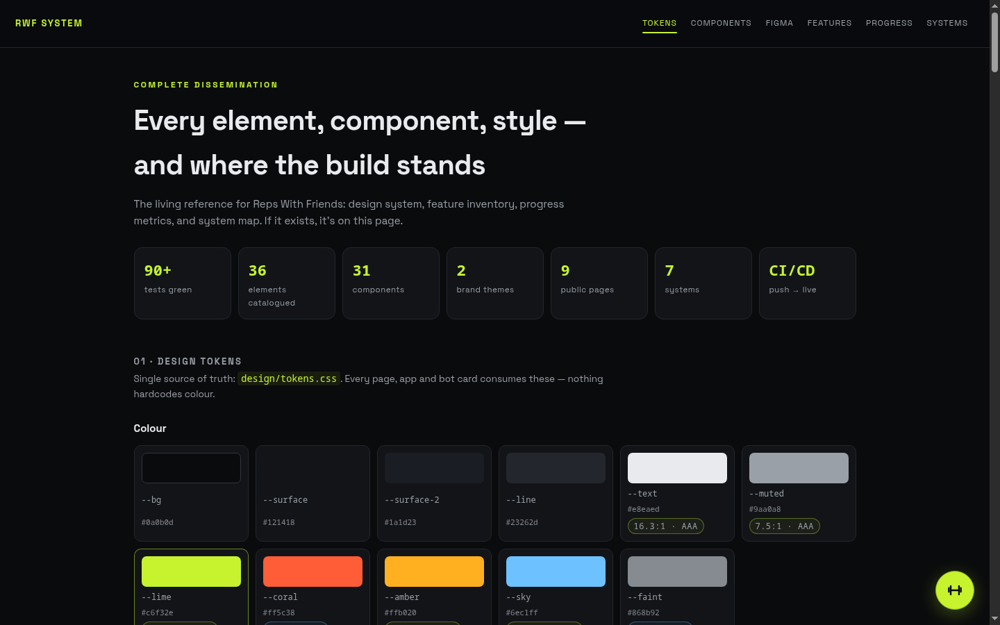

Chapter 7 · design
Design System
One token file — design/tokens.css — feeds every surface (site, app, hub, wiki). It began as a dark athletic system in lime/coral; Ben's Figma craft has been adopted alongside it as named tokens, with an opt-in gold theme that re-points the core slots. The open question is which palette ships by default.
Tokens
liveCSS custom properties on :root — colour, type, radius, motion. This very wiki consumes them (they're linked at the top of every page's head).
Beyond colour: type (Space Grotesk body/display + Anton and Inter vendored as Ben's pair — woff2 in design/fonts/, no CDN), the radius scale (9 / 14 / 16-lg / 24-xl — his 8/12/16/24 mapped on), and the motion budget: a 160ms control law plus a strategic ramp — calm setup (200ms) → sheet slide (250ms) → row reposition spring (400ms) → winner finale (1200ms confetti + count-up) → DZ3 heartbeat pulse (1000ms). Anti-casino clause applies: intensity only where the game earns it.
Contrast is enforced with intent: --faint had to be lifted to #868b92 to clear AA 4.5:1 on all three surfaces for real text; the old #5f646d survives only as --faint-deco, decorative dots and markers, never text.
The gold / lime theme question
open
Two palettes, one contract. The slot names are the contract — --lime has meant "primary accent" since day one. The opt-in theme <html data-theme="gold"> re-points the core slots 1:1 onto Ben's purple-ink surfaces and brand gold, so every token consumer — existing and new — flips together, and lime/coral values are never overwritten anywhere.
Where each lives today: our surfaces (site, hub, this wiki) default to the lime palette; the figma-app defaults to gold with a lime toggle in its status bar (both shots on this page show gold). The founder call decided the demo runs gold-first; which palette ships as the product default is the open design decision.
Component library + icons
live16 design-system primitives — buttons, chips, sheets, banners, leaderboard rows, countdown pills, avatar rings, medals… — implemented as HTML/CSS from the Figma extraction (lane F3) and browsable at the local route /figma (figma/impl/components/). The production surfaces consume them via figma-components.css (shipped in the app bundle). A 22-icon set was redrawn as inline SVG paths to Ben's strokes — no icon font, no CDN.
Every component spec (props, states, sizes, exact fills) is written up in figma/impl/specs/, and the whole Figma adoption is reasoned through in figma/notes/analysis.md (§7 is the token decision record cited above).
The /system dissemination page
live
What. The public one-pager that disseminates the whole build: token swatches, the 16 components rendered live, all 36 elements of families A–G with per-element status, and progress bars. The wiki's Status chapter carries the same data with the blockers register beside it.